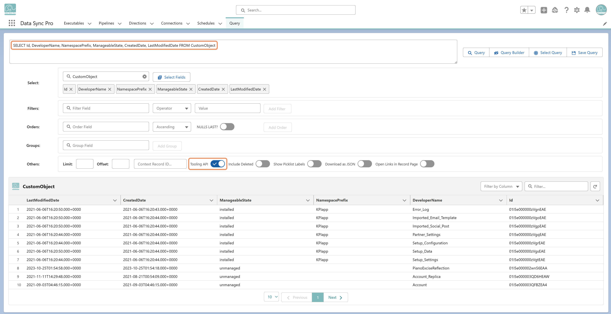

Yes. Toggle Tooling API mode in Query Manager to query metadata and system-related objects (like CustomObject, ApexClass, or CustomField) that aren't accessible through standard SOQL.
CustomObject
ApexClass
CustomField
